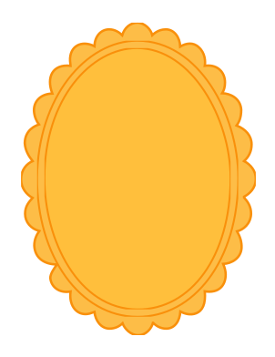
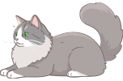
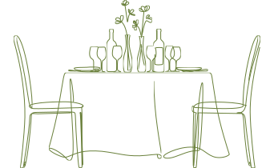
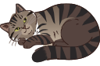
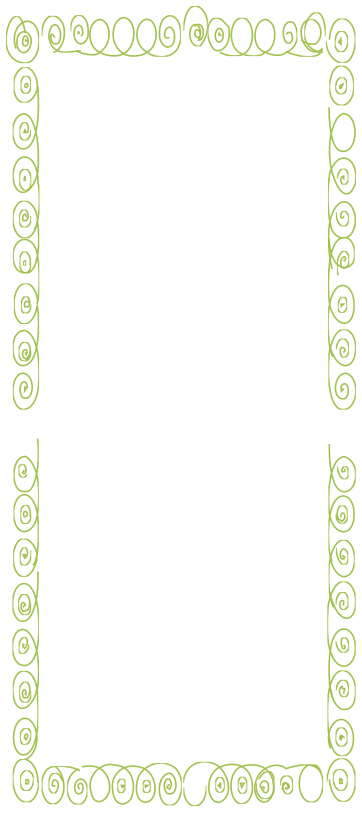
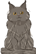

You'reInvited

The Engagement Of

Mohamad SahidRahman

Khalfia AnisaSuad

Save The Date
September 2026
- Senin21
- Selasa22
- Rabu23
- Kamis24
- Jumat25
- Sabtu26
- Minggu27
- Pukul :
- 10.00 WIB - Selesai
- Lokasi :
- Rumah Bapak Suad Komp. Ciledug Indah 2, Jl. Delima 2 Blok C XI No. 18, Kel. Pedurenan, Kec. Karang Tengah, Kota Tangerang Lihat Lokasi di Peta



Rahman & Fia

